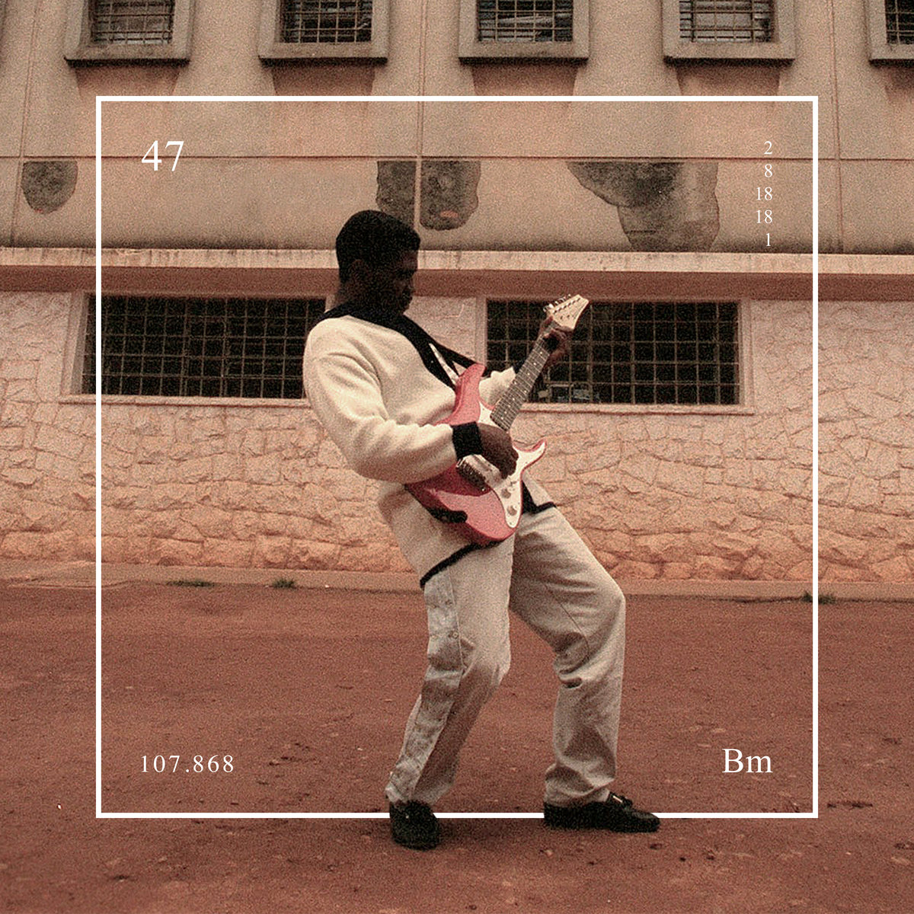
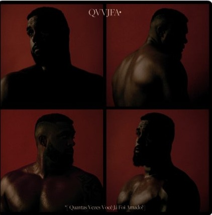

Diogo Álvaro
Rapp, Blues e MPB
Nasceu em Salvador, Bahia
luta jiu-jitisu e Muai thay
É rapper, cantor e compositor brasileiro

Bluesman é um álbum que fala basicamente sobre sentimentos...
O álbum "Esú" de Baco Exu do Blues é uma exploração das dualidades...

O álbum "QVVJFA?" explora temas como amor, sexualidade, raiva...